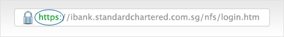

Secure your technology
While operating systems and web browsers do a good job of keeping your information secure and private, you may want to consider adding additional layers of security to your computer.
Update and protect your devices
Ensure all your computers, mobile phones, PDAs, portable devices, operating systems and Internet browsers - especially those used for online banking - are regularly updated with the latest software.
We've got a quick checklist below of some steps you should take to make sure your connected devices are as secure as possible:
Enable personal firewalls
Secure your Internet connection and computer with a personal firewall. It ensures the right data goes to the right places, and keeps unwanted connections from accessing your data.
Both Windows and Mac operating systems offer built-in firewall functionality.
Turn on screensavers/password protection
Lock your machine when you're away from your computer, or configure a password-protected screensaver to be activated after a preset period of inactivity.
This will help to ensure that both your machine and connection remain secure when you're distracted or busy with something else.
Install anti-virus and malware scanning /
protection softwares
Anti-virus protection softwares are easily downloaded and can be key in keeping your computer virus-free.
If you're not sure about computer protection, seek advice from your computer/device manufacturer or service provider.
Secure your connections
Once your device is protected and updated, you should also ensure that the networks and connections you use to manage your life and your money online are secure.
A well designed and properly managed network keeps traffic and transactions free from unwanted monitoring or intrusion. It’s up to you to ensure that the network you choose keeps you and your information safe.
Secure your home network
Safe banking at home starts with securing your own network, especially if you're using a wireless connection. An updated and protected computer, connected to trusted sites via a trusted network, is the safest possible way to work, bank, and live online.
- Always ensure a personal firewall is installed – regardless of how you connect to the Internet.
- Your wireless network should at least be locked down with a WPA level protection, and WPA-2 level whenever possible.
- Consider reducing your network’s range or broadcast to make it harder for unauthorised users to find and gain access.
Use trusted public networks
Remember that online banking is different from socially browsing the Internet or sending email. Adopting a different attitude towards security and privacy is necessary to keep your money and information safe.
- Do not use networks that are neither secured nor encrypted. Connect to a secure network by looking out for the padlock icon beside it.
- Use only reputable network providers.
- Never use public Internet computers or other devices for online banking.
Browse securely
Ensure your personal firewall is up and running – this is especially important when you are banking online away from home.
Verify website links
Criminals may create fraudulent websites that mimic real websites with a similar appearance and a seemingly related URL. Most browsers can help you verify that the address you’ve entered belongs to the appropriate site.
- Use your browser's address bar to match the site and the address. Look out for other signs of malicious sites: outdated design, broken links, poor grammar, and other errors.
- Only use trusted and verified links to access the Standard Chartered website.
- Always key in the Standard Chartered web address when you access the home page or Internet banking.
Secure your data
Protect your bank accounts
We'll never request your account information and password over the phone, via email or SMS. We'll also never direct you to a site to input your username and password. Your password and PIN are private to you – Never reveal them to anyone.
Be on the lookout for:
- Messages that do not address you by your name
- Email addresses that do not match the person or organisation it claims to be
- Messages that contain poor spelling and grammar
- Messages that claim you have won a prize or direct you to click on a link
Keep your passwords and PINs secure
Your passwords and PIN should:
- Not be based on guessable information such as your name, personal telephone number, birthday or other personal information
- Be kept confidential and not be divulged to anyone
- Be memorised and not recorded anywhere
- Be changed regularly, or when there is any suspicion that it has been compromised or impaired
- Not be used for different websites, applications or services, particularly when they relate to different entities
- A PIN should be at least 6 digits or 6 alphanumeric characters
- Not be stored or retained in your browser
- A password should be at least 8 characters and contain a mix of uppercase letters, lowercase letters and numbers.
Only log in through our website or apps and
remember to log off
Go to our website and select your country. Never log in to online banking from any email you've received as it may be a scam - we'll never ask you to log in via an email link.
View common online scams
Always log out from your online/mobile banking account when you’ve finished. Closing the browser window does not guarantee secure logout and it could leave your account open to misuse.
Look after your documents
Lock your documents in a safe place and shred any bills, receipts, statements and unwanted mail you wish to get rid of, as they contain key details that can be used to steal your account information.
Protect your identity
Criminals are targeting social networking sites such as Facebook™, Twitter, MySpace and Bebo to steal personal information - so be careful with what you share online.
- Don't publish details that can identify you. They include birthdates, phone numbers, addresses and full names.
- Limit your profile. Consider restricting your profile to friends and family only.
- Keep your password safe and don't use the same one for all your online accounts.
- Make sure you understand the privacy policy of each site as some may sell users' email addresses, leaving you susceptible to phishing and spam.
Check your statements regularly
This doesn't take long and it will help you spot any fraudulent transactions. If you notice something unusual or suspect that you have been a victim of fraud of identity theft, please contact us immediately by calling the number on the back of your card or bank statement.
Sign up for eStatements and SMS alerts, and receive real-time updates on your accounts.
Keep your Token and One Time Password (OTP) secure
- Do not allow anyone to use or tamper with your OTP security token
- Do not reveal the OTP generated by your security token or OTP SMS received from the bank to anyone
- Do not divulge the serial number of your security token to anyone.

{kind=link}